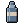
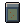
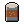
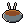
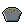

Wiki / Objetos / Comida y bebida
Verduras del huerto
Alimento
| Atributo | Valor |
|---|---|
| Calorías | 250 kcal |
| Agua | 100 ml |
| Caducidad | 4 días |
Recetas
Se usa como ingrediente
| Receta | Ingredientes | Herramientas | Dónde | Habilidad | Resultado |
|---|---|---|---|---|---|
| Verduras en conserva (duran 3 meses) | Verduras del huerto ×2, Botella vacía ×2,  Botella de agua ×1 | — | Fuego | Agricultura |  Verduras en conserva ×2 |
| Sopa (calienta) | Verduras del huerto ×1, Botella de agua ×2,  Lata de frijoles ×1 | — | Fuego | — |  Sopa caliente ×2 |
| Cocinar verduras | Verduras del huerto ×1, Botella de agua ×1 | — | Fuego | — |  Verduras cocidas ×1 |
Código: legumes